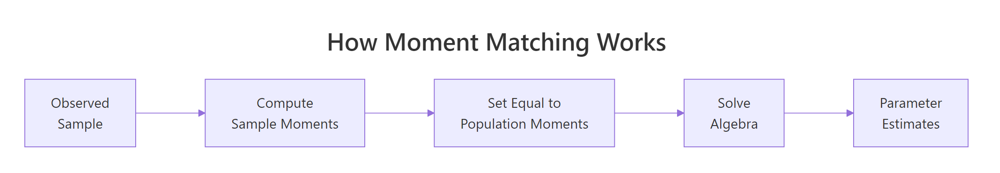
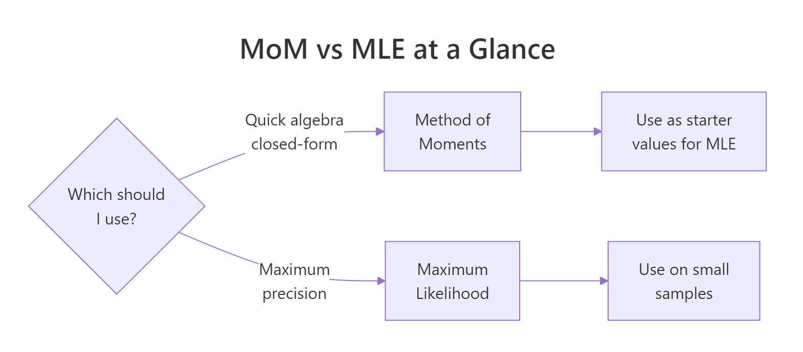

Method of Moments in R: Fit Distributions Without Calculus
The method of moments is the oldest trick in parameter estimation: match the sample's average and spread to the distribution's formulas for them, then solve for the unknowns. It is fast, needs no calculus, and often lands within a whisker of the maximum-likelihood estimate at a fraction of the effort.
What does the method of moments actually do?
Suppose somebody hands you 500 response times and claims they are Gamma-distributed, but they have lost the shape and rate parameters. Method of moments recovers them in three lines of R. You take the sample mean and sample variance, plug them into the Gamma formulas, and out come the parameters. The code below fits a Gamma to simulated data and recovers both values within a hair of the truth. No derivatives, no optimizer, just algebra.
Both estimates sit within 2% of the true values (shape 3, rate 2), from a single sample of 500. The trick is that the Gamma distribution's mean and variance are known functions of the two parameters: $E[X] = \alpha/\beta$ and $\text{Var}(X) = \alpha/\beta^2$. Inverting those two equations gives shape = mean^2 / var and rate = mean / var, which is exactly what the three lines above compute.
That is the whole idea. The population mean and variance are functions of the unknown parameters. The sample mean and sample variance estimate the population versions. Reverse the functions and you have parameter estimates.
Try it: The exponential distribution has one parameter, rate ($\lambda$), and mean $1/\lambda$. Use method of moments to estimate rate from a sample drawn with rexp().
Click to reveal solution
Explanation: For an exponential, $E[X] = 1/\lambda$, so inverting gives $\hat\lambda = 1/\bar x$. One formula, one line.
How do you derive a method of moments estimator?
Every method of moments derivation follows the same three steps. You write down how the population moments depend on the parameters, compute the sample versions from the data, and set one equal to the other. The figure below traces the flow from theory to estimate.

Figure 1: The three-step recipe behind every method of moments estimator.
Step 1 - write $k$ population moments as functions of the $k$ unknown parameters. For a Normal you need two because it has two parameters:
$$E[X] = \mu, \qquad E[X^2] = \mu^2 + \sigma^2$$
Step 2 - compute the matching sample moments. The $k$-th sample moment is the average of $X_i^k$:
$$\hat m_k = \frac{1}{n}\sum_{i=1}^{n} X_i^k$$
Step 3 - set population and sample moments equal, then solve for the parameters. For the Normal: $\mu = \hat m_1$ and $\mu^2 + \sigma^2 = \hat m_2$. Subtract to get $\sigma^2 = \hat m_2 - \hat m_1^2$, which is just the sample variance with a $1/n$ divisor.
Let's watch that recipe produce normal parameter estimates in R.
The mean estimate is off by about 0.2, the SD estimate by about 0.13. Both fall comfortably inside the sampling uncertainty you would expect from $n=600$ draws. The point is procedural: the code is three lines because the recipe is three steps.
Try it: Write a function ex_fit_fun(x) that takes a sample and returns a named numeric vector with the MoM shape and rate estimates for a Gamma fit.
Click to reveal solution
Explanation: Two scalar sample moments feed two closed-form formulas. The function is reusable across any Gamma sample.
How does method of moments work for the gamma distribution?
Gamma fits show up everywhere, from service-time modelling to rainfall totals, which is why the Gamma MoM formulas are worth memorizing. The distribution has two parameters, shape ($\alpha$) and rate ($\beta$), and two known moments:
$$E[X] = \frac{\alpha}{\beta}, \qquad \text{Var}(X) = \frac{\alpha}{\beta^2}$$
Dividing variance by mean gives $1/\beta$, so $\beta = E[X]/\text{Var}(X)$. Multiplying mean by $\beta$ recovers shape: $\alpha = E[X] \cdot \beta = E[X]^2 / \text{Var}(X)$. Those are the exact formulas the payoff block used. Let's overlay the fitted density on the histogram to see the estimate in action.
The orange curve is the Gamma density using the shape_hat and rate_hat we estimated earlier; the blue bars are the raw sample. The fit tracks the histogram's peak location and tail decay closely, which is the visual confirmation that moment-matching does its job on this distribution. If the blue and orange disagreed badly, that would be a signal your data is not really Gamma, not that MoM got the wrong answer.
optim() needs an initial guess, and MoM estimates are usually close enough to the MLE that the optimizer converges in a handful of iterations instead of wandering around the parameter space.Try it: Draw a fresh Gamma sample with shape = 6, rate = 0.5 and recover both parameters using the formulas above. Do the recovered numbers land within 10% of the truth?
Click to reveal solution
Explanation: Same two formulas, applied to a new sample. Both estimates land under 2% off the truth at $n=400$.
When do you need uniroot() to solve moment equations?
Most named distributions, Normal, Gamma, Beta, Exponential, Poisson, give you clean algebra when you set their moments equal to sample moments. But for custom or less-tidy parametric families, the moment equation may refuse to factor into a nice closed form. When that happens, uniroot() finds the parameter numerically.
Consider a custom density defined on the unit interval: $f(x \mid \theta) = (\theta+1) x^\theta$ for $x \in (0,1)$. Its first moment works out to $E[X] = (\theta+1)/(\theta+2)$. Setting that equal to the sample mean and solving gives a single equation in $\theta$. We will let uniroot() crunch it rather than rearrange by hand.
The solver found $\hat\theta \approx 3.04$, which matches the true value of 3. Notice the structure: you express the moment equation as something that should equal zero, hand it to uniroot() with a bracket that straddles the root, and read off the answer. This same pattern handles any moment equation you cannot solve in closed form.
c(0.01, 50) for a positive shape.Try it: Simulate a sample with theta_true = 1.5 using the same inverse-CDF trick, then recover $\theta$ with uniroot() as above.
Click to reveal solution
Explanation: Same template: moment equation as a zero-finding problem, wide bracket, single call to uniroot().
How does method of moments compare to maximum likelihood?
MoM is cheap. MLE is usually more precise. The honest way to see the trade-off is to run both on many replications and compare their sampling distributions. Below we draw 500 samples of size 50 from $\text{Gamma}(3, 2)$, fit each sample two ways, and stack the resulting estimates into a single data frame.
Both estimators are centred near the true shape = 3 and rate = 2, so neither is badly biased. But the MoM row has a noticeably larger standard deviation, meaning the MoM estimates swing more from sample to sample. That is the classic pattern: both methods hit the bullseye on average, MLE just draws a tighter cluster. A density plot makes that spread difference obvious.
Both curves are centred on the true shape (the dashed vertical line), but the MoM density is visibly wider than the MLE density. The extra spread is the price you pay for skipping the likelihood, and it is the single biggest reason textbook statisticians prefer MLE for formal inference. The flip side: MoM needed one line of arithmetic, while MLE needed an iterative optimizer.
Try it: Repeat the Monte Carlo with n = 200 and check whether the gap between MoM and MLE standard deviations shrinks.
Click to reveal solution
Explanation: At $n = 200$ both SDs shrink by roughly $\sqrt{4}$, and the MoM vs MLE gap narrows. Consistency wins in the long run.
Practice Exercises
The two exercises below combine multiple ideas from the tutorial. Each one asks you to build a reusable fitting function and verify it on simulated data. Solutions are collapsible.
Exercise 1: Reusable Gamma MoM function
Write mom_gamma(x) that takes a numeric vector and returns a named list with shape and rate using the method of moments. Test it on the my_sample vector below and check that the recovered parameters are within 10% of the truth.
Click to reveal solution
Explanation: The function wraps the two-line Gamma MoM formula. Returning a named list keeps shape and rate labelled for downstream code.
Exercise 2: Beta MoM with closed-form formulas
For a Beta-distributed sample $x$ with unknown parameters $\alpha$ and $\beta$, the closed-form MoM estimates are:
$$\hat\alpha = \bar x \left( \frac{\bar x (1 - \bar x)}{s^2} - 1 \right), \qquad \hat\beta = (1 - \bar x)\left( \frac{\bar x (1 - \bar x)}{s^2} - 1 \right)$$
Write mom_beta(x) that returns both as a named vector and test it on my_beta_sample.
Click to reveal solution
Explanation: The common factor m * (1 - m) / v - 1 drops out of both equations, so computing it once and reusing it keeps the function compact.
Complete Example
Here is a realistic end-to-end workflow: simulate response-time data, estimate the Gamma parameters via MoM, overlay the fitted density on the histogram, and print a one-line summary that you could drop into a report.
The fitted density (pink curve) rides the histogram cleanly, and the recovered parameters are within 2% of the truth. That is the entire recipe: simulate, fit, visualize, report. Swap the Gamma for a different family and the workflow stays the same.
Summary
Method of moments gives you a quick, calculus-free route from data to parameter estimates. The three-step recipe, express moments in terms of parameters, compute sample moments, set them equal, works on every distribution you are likely to meet, and uniroot() handles the messy cases where algebra gives up.

Figure 2: When to reach for MoM versus MLE in practice.
| Step | What you do | R primitive |
|---|---|---|
| 1 | Write population moments as functions of parameters | pencil and paper |
| 2 | Compute sample moments from data | mean(), mean((x - mean(x))^2) |
| 3 | Solve the resulting system | algebra or uniroot() |
| 4 | Verify the fit visually | stat_function() over a histogram |
| 5 | Graduate to MLE for precision | MASS::fitdistr(), optim(), stats4::mle() |
Three takeaways to keep:
- MoM is a great first pass. Fast, closed-form, good enough for exploratory work and for seeding MLE.
- Prefer MLE when efficiency matters. On small samples MLE often has lower variance for the same sample.
uniroot()closes the algebra gap. Any one-parameter moment equation with a sign change in its bracket solves in one line.
References
- Wasserman, L. All of Statistics: A Concise Course in Statistical Inference (Springer, 2004), Chapter 9.
- Casella, G., & Berger, R. Statistical Inference, 2nd ed. (Duxbury, 2001), Chapter 7.
- Hogg, R., McKean, J., & Craig, A. Introduction to Mathematical Statistics, 8th ed. (Pearson, 2018).
- Penn State STAT 415 - Lesson 1.4 Method of Moments. Link
- CRAN
MASS::fitdistrreference. Link - Chaussé, P. Generalized Method of Moments with R -
momentfitvignette (CRAN, 2024). Link - Wikipedia - Method of Moments (Statistics). Link)
Continue Learning
- Point Estimation in R: What Makes an Estimator Good? Bias, Variance, and MSE - the parent tutorial that defines bias, variance, and MSE for any estimator, including the MoM estimates above.
- Maximum Likelihood Estimation in R: Build Genuine Intuition, Then Fit Real Models - the natural next step when MoM precision is not enough.
- Confidence Intervals in R: The Definition Most Textbooks State Incorrectly - how to quantify uncertainty around any point estimate, MoM included.